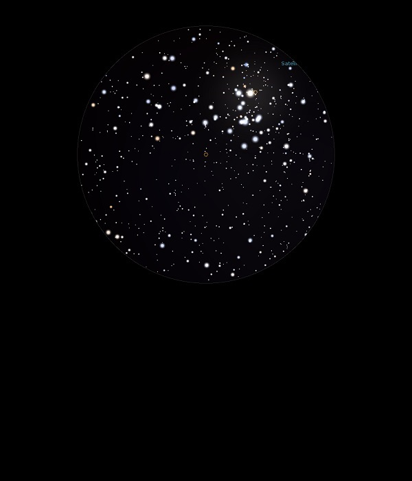

NGC 2239

Open Cluster in Monoceros
NGC 2239
Mag 8.0
23/01/14
Open Cluster within the Rosette Nebula
The brightest stars form a neat looking 'chair' shaped asterism in 25mm of which HIP 31130 at Mag 6.75 is the brightest